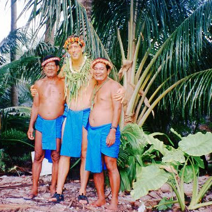

Faraleup Atoll consists of 0.2 square miles of land in the middle of the Pacific Ocean. It is populated by approximately 150 people, and is considered one of the most remote civilizations in the world.
Faraelup– like thousands of low-lying coral atolls– will be under water by the end of the century.
NASA Sea Level Data
Dr. O'Brien on Faraelup
In 1994, anthropologist Patrick O'Brien travled to Faraelup with a young film student, seeking to document the lives of the Re'Metau ("People of the Open Sea.")
Today, we are editing through Dr. O'Brien's thousands of hours of footage and posting short episodes on Instagram.
Soon we would like to return to Faraelup, record the beginning of its evacuation, and find out if it isn't too late to help.